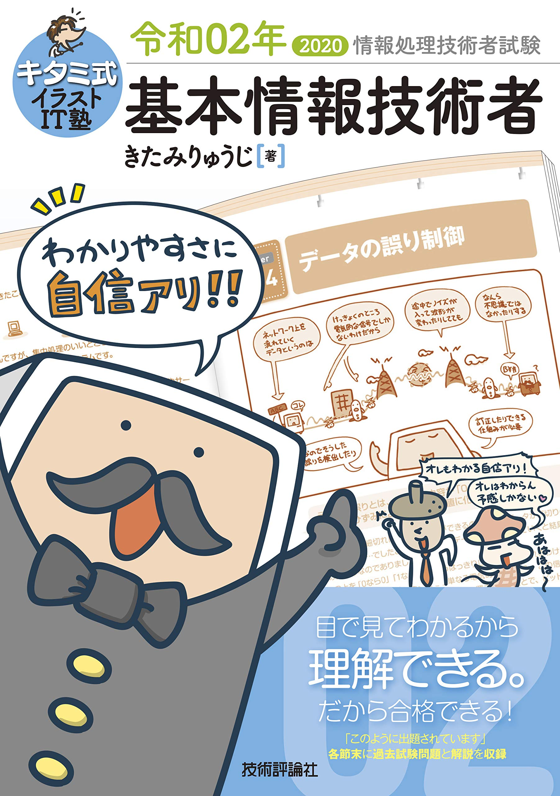

Introduce
Hello
| Name | Nami Kashima (鹿島 七海) |
| Old | 24 |
| Job | engineer |
| Main Language | Japanese |
This page was made by me.
How about that!
Contact
My history
Start
Future
Read IT Books


- 
Favorite Comics
『めだかボックス』
Who is the main hero in this story?
When I was a high school student, I read this!
Nishioishin captivated me.『煙と蜜』
Kimono × Love story
My heart throbs!!
I like Kimono.
『地縛少年花子くん』
The girl doing best is so cute.
I want to support heroine.